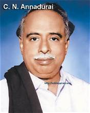
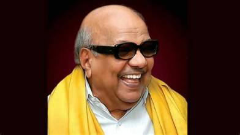
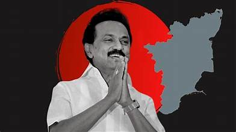

The Dravida Munnetra Kazhagam (DMK) was founded in 1949 under the leadership of C. N. Annadurai. It emerged from the Dravidian movement and became an important political force in Tamil Nadu.
The Dravida Munnetra Kazhagam was founded in September 1949 under the leadership of C. N. Annadurai.
DMK entered electoral politics and contested elections, expanding its political presence in Tamil Nadu.
DMK won the Tamil Nadu Assembly election and C. N. Annadurai became Chief Minister.
The South Indian Liberal Federation, commonly known as the Justice Party, emerged as an important early political movement in the history of the Dravidian movement.
E. V. Ramasamy Periyar launched the Self-Respect Movement, which emphasized social equality and self-respect.
The Justice Party was reorganized under Periyar as Dravidar Kazhagam.
C. N. Annadurai founded the Dravida Munnetra Kazhagam in September 1949.
DMK entered electoral politics and participated in the state elections.
DMK formed the government in Tamil Nadu after winning the 1967 Assembly election.

Founder of DMK and former Chief Minister of Tamil Nadu.

Former DMK leader, writer and five-time Chief Minister of Tamil Nadu.

DMK president and Chief Minister of Tamil Nadu.
DMK Founded
Entered Electoral Politics
Became Principal Opposition
Formed Government